Enteric Fever Example
UC Davis Seroepidemiology Research Group (SERG)
Source:vignettes/articles/enteric_fever_example.Rmd
enteric_fever_example.RmdIntroduction
This vignette provides users with an example analysis using the serocalculator package by reproducing an analysis in Aiemjoy et al. (2022). We review the methods underlying the analysis and then walk through an example of enteric fever incidence in Pakistan.
Methods
The serocalculator R package provides a rapid and computationally simple method for calculating seroconversion rates, as originally published in Simonsen et al. (2009) and Teunis et al. (2012), and further developed by subsequent publications by deGraaf et al. (2014), Teunis et al. (2016), and Teunis and Eijkeren (2020). In short, longitudinal seroresponses from confirmed cases with a known symptom onset date are assumed to represent the time course of human serum antibodies against a specific pathogen. Therefore, by using these longitudinal antibody dynamics with any cross–sectional sample of the same antibodies in a human population, an incidence estimate can be calculated. Further details are below.
A Proxy for Infection
While the exact time of infection is impossible to measure in an individual, antibody levels measured in a cross–sectional population sample can be translated into an estimate of the frequency with which seroconversions (infections) occur in the sampled population. So the presence of many high antibody concentrations indicates that many people in the population likely experienced infection recently, while mostly low concentrations indicate a low frequency of infections in the sampled population.
In order to interpret the measured cross-sectional antibody concentrations in terms of incidence, we must define the antibody dynamic over time to understand the generalized antibody response at different times since infection. This dynamic must be quantified over time to include an initial increase in serum antibody concentration when seroconversion occurs, followed by a gradual decrease as antibodies wane. In published studies, this information on the time course of the serum antibody response has been obtained from longitudinal follow–up data in cases who had a symptomatic episode following infection. In this case, the onset of symptoms then provides a proxy for the time that infection occurred.
The Seroincidence Estimator
The serocalculator package was designed to calculate the incidence of seroconversion by using the longitudinal seroresponse characteristics. The distribution of serum antibody concentrations in a cross–sectional population sample is calculated as a function of the longitudinal seroresponse and the frequency of seroconversion (or seroincidence). Given the seroresponse, this marginal distribution of antibody concentrations can be fitted to the cross-sectional data and thereby providing a means to estimate the seroincidence.
Example: Enteric Fever
In this example, users will determine the seroincidence of enteric fever in cross-sectional serosurveys conducted as part of the the SErologic and Environmental Surveillance (SEES) for enteric fever study in Bangladesh, Nepal, and Pakistan. Longitudinal antibody responses were modeled from 1420 blood culture-confirmed enteric fever cases enrolled from the same countries.
Further details on this published study can be found here: https://doi.org/10.1016/S2666-5247(22)00114-8.
Load data
Pathogen-specific sample datasets, noise parameters, and longitudinal
antibody dynamics for serocalculator are available on
the Serocalculator Repository on
Open Science Framework (OSF). We use the function
getAdditionalData to pull this data into our R
environment.
Load and prepare longitudinal parameter data
We will first load the longitudinal curve parameters to set the antibody decay parameters. In this example, these parameters were modeled with Bayesian hierarchical models to fit two-phase power-function decay models to the longitudinal antibody responses among confirmed enteric fever cases.
These parameters include the following:
- \(y_0\) = baseline antibody response
- \(y_1\) = peak antibody responses
- \(t_1\) = time to peak
- \(\alpha\) = decay rate in years (may need to be rescaled)
- \(r\) = decay shape
We also create an additional variables \(d\), which is the decay shape, or 1-\(r\).
#Import longitudinal antibody parameters from OSF
curve_param = getAdditionalData(fileURL ="https://osf.io/download/rtw5k/")Load and prepare cross-sectional data
Next, we load our sample cross-sectional data. We will use a subset of results from the SEES dataset. Ideally, this will be a representative sample of the general population without regard to disease status. Later, we will limit our analysis to cross-sectional data from Pakistan.
We have selected hemolysin E (HlyE) as our target antigen and IgG and IgA as our target immunoglobulin isotypes. Users may select different serologic markers depending on what is available in your data. From the original dataset, we rename our result and age variables to the names required by serocalculator.
#Import cross-sectional data from OSF
pop_data <- getAdditionalData(fileURL ="https://osf.io/download//n6cp3/") %>%
rename(value = result,
age = Age)Visualize antibody data
We examine our cross-sectional antibody data by visualizing the distribution of quantitative antibody responses. Here, we will look at the distribution of our selected antigen and isotype pairs, HlyE IgA and HlyE IgG, across participating countries.
#Create histograms
ggplot(pop_data, aes(x = value)) +
#geom_histogram(binwidth = 5, color = "#000000", fill = "#009999", alpha = 0.7) +
geom_histogram(aes(fill = Country), alpha = .7, color = "black") +
theme_minimal() +
labs(
title = "Distribution of Cross-sectional Antibody Responses",
x = "Antibody Response Value",
y = "Frequency"
) +
facet_wrap(~Country + antigen_iso, nrow = 3)
We see that across countries, our data is highly skewed with the majority of responses on the lower end of our data with long tails. Let’s get a better look at the distribution by log transforming our antibody response value. We will also need to update the bin width.
#Create log transformed histograms
ggplot(pop_data, aes(x = value)) +
#geom_histogram(binwidth = 0.05, color = "#000000", fill = "#009999", alpha = 0.7) +
geom_histogram(aes(fill = Country), alpha = .7, color = "black") +
scale_x_log10() +
theme_minimal() +
labs(
title = "Distribution of Cross-sectional Antibody Responses (Log transformed)",
x = "Log10(Antibody Response Value)",
y = "Frequency"
) +
facet_wrap(~Country + antigen_iso, nrow = 3)
#> Warning: Transformation introduced infinite values in continuous x-axis
#> Warning: Removed 18 rows containing non-finite values (`stat_bin()`).
Once log transformed, our data looks much more normally distributed. In most cases, log transformation will be the best way to visualize serologic data.
Load noise parameters
Next, we must set conditions based on some assumptions about the data and error that may need to obe accounted for. This will differ based on background knowledge of the data.
The biological noise, \(\nu\) (“nu”), represents error from cross-reactivity to other antibodies. Measurement noise, \(\varepsilon\) (“epsilon”), represents error from the laboratory testing process.
#Import noise parameters from OSF
noise_param <- getAdditionalData(fileURL ="https://osf.io/download//hqy4v/") %>%
rename(y.low = llod) #rename lower boundEstimate Seroincidence
Finally, we are ready to begin seroincidence estimation. We will
conduct two separate analyses using two distinct functions,
est.incidence and est.incidence.by, to
calculate the overall seroincidence and the stratified seroincidence,
respectively.
Overall Seroincidence
Using the function est.incidence, we define our starting
value as 0.2, which will also define our initial estimate for the force
of infection (FOI, \(\lambda\)
(“lambda”)). We filter to Pakistan and define the datasets for our
cross-sectional data (data), longitudinal parameters (curve_param), and
noise parameters (noise_param). We also define the antigen-isotype pairs
to be included in the estimate.
#Using est.incidence (no strata)
esttest = est.incidence(
stepmax = 1,
verbose = TRUE,
lambda_start=.2,
pop_data = pop_data %>% filter(Country == "Pakistan"),
curve_param = curve_param,
noise_param = noise_param %>% filter(Country == "Pakistan"),
antigen_isos = c("HlyE_IgG", "HlyE_IgA")
)
#> iteration = 0
#> Step:
#> [1] 0
#> Parameter:
#> [1] -1.609438
#> Function Value
#> [1] 2418.839
#> Gradient:
#> [1] 166.7471
#>
#> iteration = 1
#> Step:
#> [1] -0.4125334
#> Parameter:
#> [1] -2.021971
#> Function Value
#> [1] 2388.671
#> Gradient:
#> [1] -13.56744
#>
#> iteration = 2
#> Step:
#> [1] 0.03104033
#> Parameter:
#> [1] -1.990931
#> Function Value
#> [1] 2388.436
#> Gradient:
#> [1] -1.488097
#>
#> iteration = 3
#> Step:
#> [1] 0.003823966
#> Parameter:
#> [1] -1.987107
#> Function Value
#> [1] 2388.434
#> Gradient:
#> [1] 0.01760283
#>
#> iteration = 4
#> Parameter:
#> [1] -1.987152
#> Function Value
#> [1] 2388.434
#> Gradient:
#> [1] -2.059594e-05
#>
#> Relative gradient close to zero.
#> Current iterate is probably solution.
#>
#> user system elapsed
#> 17.12 0.00 17.12
summary(esttest)
#> # A tibble: 1 × 10
#> est.start incidence.rate SE CI.lwr CI.upr coverage log.lik iterations
#> <dbl> <dbl> <dbl> <dbl> <dbl> <dbl> <dbl> <int>
#> 1 0.2 0.137 0.00690 0.124 0.151 0.95 -2388. 4
#> # ℹ 2 more variables: antigen.isos <chr>, nlm.convergence.code <ord>Stratified Seroincidence
We can also produce stratified seroincidence estimates. Here we stratify by catchment area within Pakistan, but users can select any stratification variable.
#Using est.incidence.by (strata)
estbytest = est.incidence.by(
stepmax = 1,
verbose = TRUE,
lambda_start=.3,
strata = c("catchment"),
pop_data = pop_data %>% filter(Country == "Pakistan"),
curve_params = curve_param,
noise_params = noise_param %>% filter(Country == "Pakistan"),
build_graph = FALSE
)
#> Warning in warn.missing.strata(data = curve_params, strata = select(strata, : curve_params is missing all strata variables, and will be used unstratified.
#>
#> To avoid this warning, specify the desired set of stratifying variables in the `curve_strata_varnames` and `noise_strata_varnames` arguments to `est.incidence.by()`.
#> Warning in warn.missing.strata(data = noise_params, strata = select(strata, : noise_params is missing all strata variables, and will be used unstratified.
#>
#> To avoid this warning, specify the desired set of stratifying variables in the `curve_strata_varnames` and `noise_strata_varnames` arguments to `est.incidence.by()`.
#> Stratum catchment n
#> 1 Stratum 1 aku 294
#> 2 Stratum 2 kgh 200
#> Stratum catchment n
#> 1 Stratum 1 aku 294
#> iteration = 0
#> Step:
#> [1] 0
#> Parameter:
#> [1] -1.203973
#> Function Value
#> [1] 1469.134
#> Gradient:
#> [1] 286.4498
#>
#> iteration = 1
#> Step:
#> [1] -1
#> Parameter:
#> [1] -2.203973
#> Function Value
#> [1] 1337.913
#> Gradient:
#> [1] -0.9349032
#>
#> iteration = 2
#> Step:
#> [1] 0.003253142
#> Parameter:
#> [1] -2.20072
#> Function Value
#> [1] 1337.912
#> Gradient:
#> [1] -0.2453366
#>
#> iteration = 3
#> Parameter:
#> [1] -2.199562
#> Function Value
#> [1] 1337.911
#> Gradient:
#> [1] 0.0004252734
#>
#> Relative gradient close to zero.
#> Current iterate is probably solution.
#>
#> user system elapsed
#> 8.129 0.000 8.129
#> Stratum catchment n
#> 1 Stratum 2 kgh 200
#> iteration = 0
#> Step:
#> [1] 0
#> Parameter:
#> [1] -1.203973
#> Function Value
#> [1] 1059.262
#> Gradient:
#> [1] 91.63443
#>
#> iteration = 1
#> Step:
#> [1] -0.4995933
#> Parameter:
#> [1] -1.703566
#> Function Value
#> [1] 1037.866
#> Gradient:
#> [1] -3.457428
#>
#> iteration = 2
#> Step:
#> [1] 0.01816462
#> Parameter:
#> [1] -1.685401
#> Function Value
#> [1] 1037.831
#> Gradient:
#> [1] -0.2997428
#>
#> iteration = 3
#> Step:
#> [1] 0.001724274
#> Parameter:
#> [1] -1.683677
#> Function Value
#> [1] 1037.831
#> Gradient:
#> [1] 0.001438779
#>
#> iteration = 4
#> Parameter:
#> [1] -1.683685
#> Function Value
#> [1] 1037.831
#> Gradient:
#> [1] -2.700904e-07
#>
#> Relative gradient close to zero.
#> Current iterate is probably solution.
#>
#> user system elapsed
#> 6.76 0.00 6.76
#> user system elapsed
#> 16.340 0.000 16.341
summary(estbytest)
#> Seroincidence estimated given the following setup:
#> a) Antigen isotypes : HlyE_IgA, HlyE_IgG
#> b) Strata : catchment
#>
#> Seroincidence estimates:
#> # A tibble: 2 × 13
#> Stratum catchment n est.start incidence.rate SE CI.lwr CI.upr
#> <chr> <chr> <int> <dbl> <dbl> <dbl> <dbl> <dbl>
#> 1 Stratum 1 aku 294 0.3 0.111 0.00761 0.0969 0.127
#> 2 Stratum 2 kgh 200 0.3 0.186 0.0140 0.160 0.215
#> # ℹ 5 more variables: coverage <dbl>, log.lik <dbl>, iterations <int>,
#> # antigen.isos <chr>, nlm.convergence.code <ord>Conclusions
In our data, we find that the overall estimated seroincidence of enteric fever in Pakistan is 13.7 per 100 persons (95% CI: 12.4, 15.1). When stratified by catchment area, we find that area KGH has a higher incidence rate than area AKU [18.6 per 100 persons (95% CI: 16.0, 21.5) vs. 11.1 per 100 persons (95% CI: 9.7, 12.7).